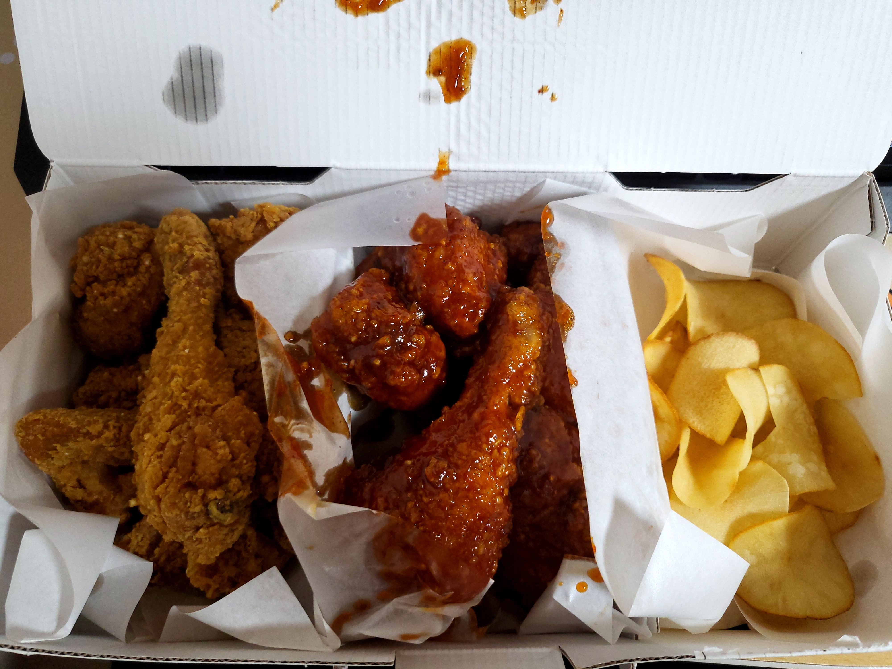
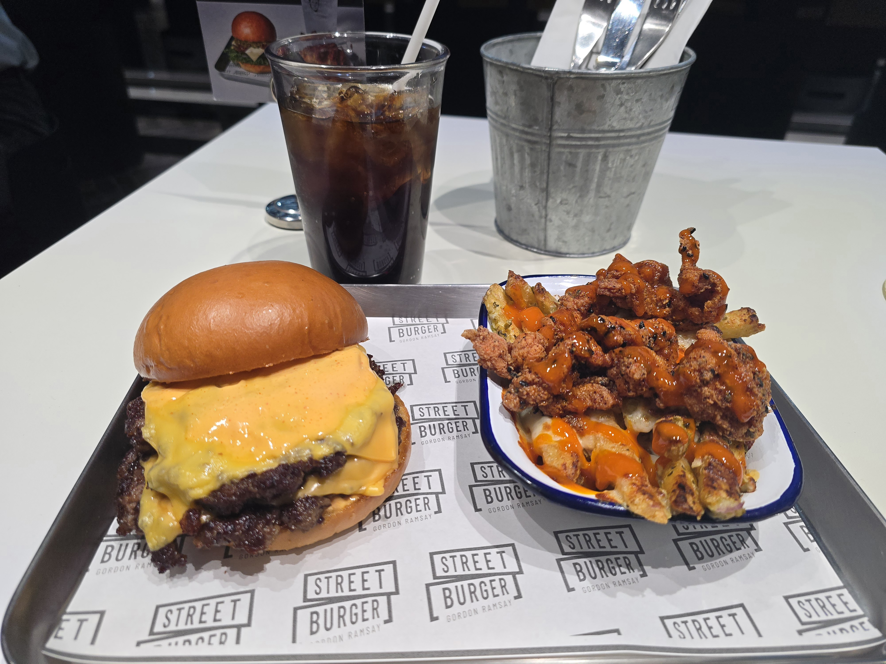

좋아하는 음식
나의 최애, 차애는?
나의 최애, 차애는?

초등학생 때 부터 변함없는 나의 최애 음식이다.
생일때면 항상 가족과 함께 스테이크를 먹으러 간다.

치킨은 언제나 옳다.
뭘 먹지 고민할 때 1순위로 떠오르는 것이 치킨이다.

알려진 것과 다르게 햄버거는 패스트 푸드 중에 꽤나 건강한 축에 속한다.
들어가 있는 소고기 패티는 언제 먹어도 질리지 않는다.
피자, 삼겹살, 파스타... 등등
맛있는 음식은 다 좋아한다.
해산물을 먹지 못한다.
익힌 생선을 제외한 거의 모든 해산물을 비려서 먹지 못한다.